- Morfología y profundidad: superficial, folicular, absceso o dermohipodermis.
- Huésped y localización: edad, embarazo, inmunosupresión, ojo, cara o genital.
- Evolución: dolor desproporcionado, necrosis o deterioro son excepciones inmediatas.
La forma de la lesión decide qué muestra merece la pena
Una costra melicérica superficial no se estudia como una placa caliente profunda; una tiña se raspa en el borde activo; una vesícula reciente ofrece mejor PCR que una costra antigua; una úlcera genital exige además una historia sexual respetuosa.
Cultiva si recidiva, fracasa, es extensa, hay brote colectivo o sospecha de resistencia; en absceso, el drenaje suele ser la intervención central.
Raspado de escama del borde activo antes de antifúngico sistémico o si el diagnóstico no es claro.
PCR del fondo de una vesícula recién abierta; distribución metamérica orienta a zóster.
PCR de lesión y serología; añade VIH y otras pruebas según prácticas, ventana y epidemiología.
La muestra correcta vale más que un cultivo indiscriminado
Toma muestra cuando el resultado pueda confirmar un imitador, seleccionar vía sistémica, detectar resistencia o activar un estudio de contactos. Registra tratamientos previos y el lugar exacto: «piel» o «exudado» sin anatomía limita la interpretación.
| Problema | Muestra útil | Error frecuente |
|---|---|---|
| Impétigo/absceso | Exudado de lesión abierta o pus profundo si fracaso, recidiva, cuadro extenso o riesgo de resistencia. | Cultivar piel intacta o una costra seca sin limpiar. |
| Celulitis no purulenta | No requiere frotis rutinario. Cultiva si hay piel rota con exposición acuática, mordedura/penetración, adquisición exterior o mala evolución. | Interpretar un hisopo superficial como germen causal. |
| Tiña | Escamas del borde activo; en cuero cabelludo, pelos rotos y escama; en uña, material subungueal proximal. | Raspar el centro tratado o iniciar meses de antifúngico oral sin demostrar hongo. |
| HSV o mpox | PCR de lesión reciente: abrir vesícula y frotar el fondo o muestrear vigorosamente la lesión compatible según el kit. | Usar una costra antigua cuando existen lesiones nuevas. |
| Sífilis | Prueba treponémica y no treponémica cuantitativa basal; prueba directa de lesión si está disponible. | No guardar el título basal, imprescindible para medir respuesta. |
| Gonococo/clamidia | TAAN en todas las localizaciones expuestas —urogenital, faríngea y/o rectal— según prácticas. | Limitar el cribado a orina cuando hubo exposición faríngea o anal. |
Una foto enfocada, con escala y plano de localización, documenta la morfología antes de limpiar, destechar, drenar o crioterapizar. No sustituye la muestra ni debe incluir rasgos identificativos sin consentimiento.
Superficial, absceso y celulitis son tres problemas distintos
El impétigo vive en epidermis; el absceso contiene pus y necesita drenaje; la celulitis compromete dermis e hipodermis y se trata por vía sistémica. Evita llamar celulitis a toda pierna roja bilateral.
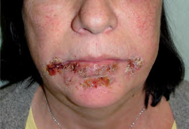
Costra melicérica superficial; revisa barrera, contactos y extensión.
Recopilación Dermatología 2025 · pág. 97.Impétigo
- Higiene, retirada suave de costras y no compartir toallas.
- Localizado y sin afectación general: antiséptico o antibiótico tópico durante un curso corto según guía local.
- Extenso, ampolloso o con síntomas: antibiótico oral activo frente a estreptococo y estafilococo según resistencias locales.
- No combines tópico y oral por rutina; el uso repetido de fusídico/mupirocina selecciona resistencia.
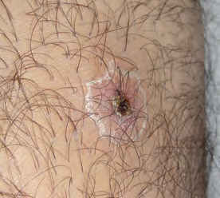
Infección folicular profunda; busca fluctuación y extensión de la celulitis alrededor.
Recopilación Dermatología 2025 · pág. 99.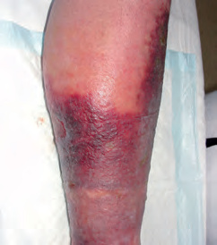
El caso original tenía insuficiencia venosa: la foto por sí sola no separa infección de dermatitis por estasis. Mandan unilateralidad, calor, dolor y progresión.
Recopilación Dermatología 2025 · pág. 99.| Patrón | Claves | Conducta |
|---|---|---|
| Foliculitis | Pústula centrada por pelo; fricción, afeitado, oclusión o piscina orientan el germen. | Medidas locales; cultivo si extensa, profunda, recidivante o refractaria. |
| Forúnculo/absceso | Nódulo doloroso, fluctuante o supurativo. | Incisión y drenaje si colección; antibiótico según celulitis asociada, fiebre, tamaño, localización y huésped. |
| Celulitis/erisipela | Placa unilateral caliente, dolorosa y progresiva; puerta de entrada interdigital, herida o edema. | Antibiótico sistémico según protocolo; marcar borde y revisar en 48–72 h. |
| Imitador frecuente | Piernas bilaterales rojas, pruriginosas y crónicas con edema/descamación. | Piensa en dermatitis por estasis antes de duplicar antibióticos. |
Absceso: primero confirma que hay colección
- Fluctuación, punto de drenaje o ecografía a pie de cama si la exploración no es concluyente.
- La incisión y drenaje adecuados son el tratamiento central de una colección accesible; enviar pus si el cultivo va a modificar conducta.
- Añade antibiótico según afectación general, celulitis extensa, múltiples lesiones, inmunosupresión, extremos de edad, localización compleja o fracaso del drenaje aislado.
- En recurrencias busca hidradenitis, quiste epidérmico, seno pilonidal, cuerpo extraño, colonización o contactos con lesiones; no encadenes antibióticos sin redefinir el diagnóstico.
Celulitis: tratar y corregir la puerta de entrada
- Delimita el borde, registra constantes y extensión, y decide oral frente a hospital según gravedad y tolerancia.
- No esperes una desaparición inmediata: la inflamación puede tardar, pero dolor, fiebre o extensión no deberían seguir empeorando tras 48–72 horas.
- Eleva la extremidad y trata edema, heridas, eczema y tiña interdigital para reducir recurrencias.
- Reconsidera trombosis, estasis, lipodermatoesclerosis, gota, reacción a picadura o dermatitis de contacto si es bilateral, pruriginosa, crónica o no responde.
La elección y duración dependen de diagnóstico, gravedad, alergias, función renal, microbiología y resistencias del área. Esta guía fija el circuito —drenar, cultivar selectivamente y revisar—, pero no reemplaza la política antimicrobiana vigente del centro.
La excepción que no espera
Dolor desproporcionado, progresión horaria, anestesia cutánea, bullas hemorrágicas, crepitación, necrosis o toxicidad sistémica sugieren infección necrosante: valoración quirúrgica y antibiótico hospitalario inmediato. No esperes a que la piel “parezca grave”.
El borde activo, el pelo y la matriz cambian la vía
La tiña corporal localizada suele responder a tópico; cuero cabelludo, barba y uña con matriz necesitan tratamiento sistémico y confirmación. Evita combinaciones de antifúngico con corticoide potente que enmascaran una tiña.
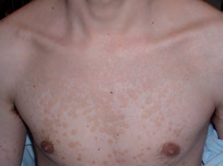
Máculas hipo o hiperpigmentadas en tronco; la pigmentación tarda en normalizarse tras curar el hongo.
Recopilación Dermatología 2025 · pág. 100.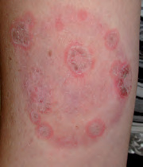
Raspa el borde elevado, no el centro ya aclarado.
Recopilación Dermatología 2025 · pág. 100.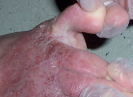
La maceración y la fisura mantienen el hongo y pueden actuar como puerta de entrada bacteriana.
Recopilación Dermatología 2025 · pág. 100.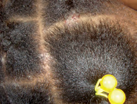
Afecta el tallo piloso: el tratamiento tópico aislado no llega al reservorio.
Recopilación Dermatología 2025 · pág. 100.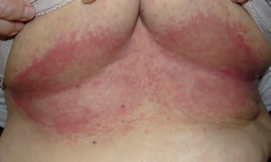
Pliegue húmedo, fisura central y lesiones satélite; corrige humedad además de tratar.
Recopilación Dermatología 2025 · pág. 103.Tiña corporal, inguinal o pie
- Terbinafina o un azol tópico según localización, producto y ficha técnica.
- Aplicar también 1–2 cm alrededor y continuar el tiempo recomendado, no hasta el primer día sin picor.
- Trata pie de atleta si actúa como puerta de entrada de celulitis.
- Si extensa, folicular, inmunosupresión o fracaso confirmado: cultivo y vía oral.
Tiña capitis
- Antifúngico oral; elección y duración dependen de especie y epidemiología.
- Toma cultivo/PCR cuando esté disponible, sin retrasar un querion inflamatorio.
- Champú antifúngico reduce transmisión pero no cura en monoterapia.
- Revisa convivientes y contacto con animales; no compartir peines ni gorras.
Uña: demostrar antes de tratar meses
- Psoriasis, trauma, liquen plano y envejecimiento imitan onicomicosis; confirma con examen directo, cultivo, PCR o histología según disponibilidad.
- Toma el material más proximal accesible bajo la uña tras recortar la zona distal; una muestra superficial aumenta falsos negativos.
- Valora porcentaje afectado, matriz, número de uñas, dolor, diabetes y circulación antes de decidir tópico frente a oral.
- Antes de antifúngico sistémico revisa hepatopatía, interacciones y ficha técnica; el aspecto normal tarda meses por el crecimiento ungueal.
Pliegues y versicolor
- En intertrigo, reducir humedad, fricción y oclusión es parte del tratamiento; revisa obesidad, diabetes, incontinencia y ropa.
- Pústulas satélite y borde poco definido favorecen Candida; borde activo periférico sugiere dermatofito; placa marrón fina puede ser eritrasma.
- La pitiriasis versicolor responde a antifúngico tópico en la mayoría; la recidiva es frecuente y no implica inmunodeficiencia.
- No prometas repigmentación inmediata: el color puede tardar semanas o meses aunque la descamación y el examen micológico se normalicen.
Un corticoide potente puede borrar el borde, disminuir la descamación y permitir que el dermatofito se extienda. Ante una placa asimétrica que empeora o reaparece al retirar corticoide, suspende la combinación fija, toma escamas y redefine el diagnóstico.
Trata a todos a la vez y explica que el picor tarda en irse
Prurito nocturno, convivientes afectados, pápulas excoriadas en muñecas, espacios interdigitales, cintura, nalgas o genitales y surco acarino forman el patrón. La ausencia de un surco visible no la excluye.
Aplicar por la noche en toda la superficie indicada por edad; repetir a los 7–14 días.
Convivientes y parejas sexuales estrechas de las ocho semanas previas se tratan simultáneamente, tengan o no picor.
Lavar y secar en caliente; lo no lavable se embolsa al menos 72 horas.
Cómo explicar la permetrina
- Piel seca y fría, desde cuello hacia abajo en adulto, sin olvidar ombligo, ingles, nalgas, genitales externos, espacios interdigitales y debajo de las uñas.
- Incluye cuero cabelludo, frente, sienes y orejas en lactantes, personas mayores o cuando haya lesiones allí, evitando ojos y boca y siguiendo la ficha del producto.
- Reaplica en manos si se lavan durante el tiempo de contacto; ducha y ropa limpia al finalizar.
- La segunda aplicación elimina ácaros nacidos después de la primera. El fallo técnico es más común que una resistencia verdadera.
Entorno y síntomas
- Trata a los contactos el mismo día para cortar la reinfestación circular.
- Lava ropa, toallas y sábanas usadas recientemente; no hace falta fumigar la vivienda ni desechar colchones.
- El antihistamínico o corticoide tópico apropiado puede aliviar el eczema residual, pero no sustituye el escabicida.
- Nuevos surcos o lesiones típicas después del intervalo esperado sí obligan a revisar diagnóstico, técnica y contactos.
Puede persistir 2–4 semanas pese a erradicación. Revisa técnica, zonas omitidas, contactos no tratados y aparición de lesiones nuevas antes de repetir sin límite. El consenso español de 2026 reserva ivermectina oral 200 µg/kg en pacientes de más de 15 kg para fracaso o brotes institucionales; pauta, embarazo e interacciones requieren revisión individual.
Sarna costrosa
Hiperqueratosis extensa en inmunodeprimido, persona institucionalizada o con poca respuesta inflamatoria es muy contagiosa y requiere aislamiento de contacto, Dermatología/Infecciosas y combinación intensiva de permetrina e ivermectina.
Distribución, dolor y estado inmune ordenan herpes, zóster y molusco
Las vesículas se rompen pronto y pueden llegar como erosiones o costras. Pregunta por pródromo, recidiva en el mismo sitio, dermatoma, línea media y lesiones fuera del área principal.
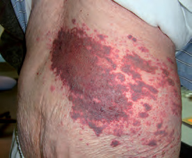
Patrón metamérica unilateral con lesiones en distintas fases y dolor neurítico.
Recopilación Dermatología 2025 · pág. 114.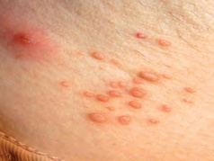
Umbilicación central; en adulto genital ofrece consejo sexual y valora inmunidad si es exuberante.
Recopilación Dermatología 2025 · pág. 113.Zóster sin complicación
- Valaciclovir 1 g cada 8 horas durante 7 días en adulto inmunocompetente con función renal conservada cuando está indicado; ajustar al aclaramiento de creatinina.
- Inicia idealmente en las primeras 72 horas. Después aún puede aportar si siguen apareciendo vesículas, existe inmunosupresión o hay afectación ocular, ótica o diseminada.
- La indicación es especialmente clara en mayores de 50 años, dolor moderado-intenso, cabeza/cuello, erupción extensa o huésped de riesgo.
- Analgesia escalonada y cura seca; el antiviral no sustituye el control del dolor ni previene por completo la neuralgia.
Excepciones para valoración el mismo día
- Frente o punta/lateral nasal con ojo rojo, fotofobia o alteración visual: posible zóster oftálmico.
- Vesículas en pabellón o conducto con parálisis facial, hipoacusia o vértigo: posible Ramsay Hunt.
- Lesiones ampliamente fuera del dermatoma, neumonía, hepatitis, encefalitis o focalidad neurológica.
- Embarazo, inmunosupresión relevante, dolor incontrolable o diagnóstico incierto con necrosis.
| Patrón | Confirmación | Manejo práctico |
|---|---|---|
| Herpes simple | PCR de lesión si primer episodio, localización genital, aspecto atípico, gestación o inmunosupresión. | Antiviral precoz cuando esté indicado; educación sobre recurrencias y transmisión aun sin lesión visible. |
| Zóster | Clínico si dermatoma típico; PCR en vesícula si atípico o inmunodeprimido. | Antiviral según edad, tiempo y riesgo; analgesia, cubrir lesiones y evitar contacto susceptible hasta costra. |
| Molusco | Clínico por pápula perlada umbilicada. | Observación frecuente; curetaje o crioterapia si síntomas, eczema, transmisión o preferencia. No exprimir en casa. |
| Verruga común | Clínico; revisar si pigmentada, ulcerada o refractaria. | Expectación o queratólisis/crioterapia según sitio y preferencia; explicar que suele requerir semanas o sesiones. |
Una lesión anogenital, pustulosa o umbilicada puede necesitar PCR
Considera mpox ante lesiones profundas, bien delimitadas y dolorosas —a veces pocas y anogenitales—, adenopatías o proctitis, especialmente con contacto compatible. La morfología varía y puede confundirse con HSV, sífilis, varicela o foliculitis.
Confirmación y cuidados
- Toma PCR de una o más lesiones conforme al circuito microbiológico; usa protección y avisa al laboratorio según protocolo.
- En enfermedad leve e inmunocompetente: analgesia, cuidado de lesiones, hidratación y prevención de sobreinfección.
- Evita manipular o afeitar áreas afectadas; cubre lesiones cuando sea posible y sigue las indicaciones vigentes de aislamiento.
- Ofrece estudio de otras ITS y VIH según exposición; la coexistencia es posible.
Cuándo escalar
- Dolor rectal intenso, imposibilidad para orinar o comer, afectación ocular, lesiones extensas o sobreinfectadas.
- Gestación, infancia, dermatitis atópica grave o inmunosupresión significativa.
- Enfermedad grave o alto riesgo: consulta especializada para valorar tecovirimat; no es tratamiento rutinario de toda lesión.
- Revisa el protocolo de Salud Pública vigente para aislamiento, notificación y contactos.
Describe la lesión y ofrece un estudio completo sin juicios
Número de parejas no sustituye preguntar por prácticas, localizaciones expuestas, preservativo, vacunas, PrEP, embarazo y fechas. Explora boca, piel, palmas/plantas y adenopatías cuando el patrón lo requiere.
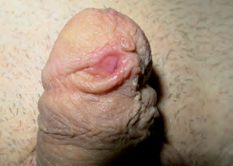
La úlcera suele ser indolora, pero la clínica no basta: solicita sífilis y PCR de HSV en toda úlcera compatible.
Recopilación Dermatología 2025 · pág. 107.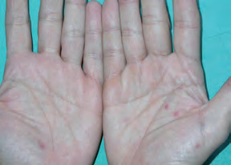
La afectación palmoplantar amplía el diferencial; puede coexistir con lesiones mucosas y adenopatías.
Recopilación Dermatología 2025 · pág. 107.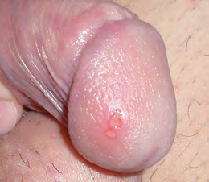
Las vesículas ya se han roto; PCR de una lesión fresca confirma y tipifica HSV.
Recopilación Dermatología 2025 · pág. 109.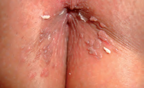
Tratamiento según número, tamaño, localización, embarazo y preferencia; revisa toda el área anogenital y otras ITS.
Recopilación Dermatología 2025 · pág. 112.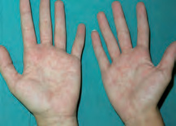
Hallazgo inespecífico: la fotografía no diagnostica VIH. El contexto febril y la exposición reciente deciden las pruebas.
Recopilación Dermatología 2025 · pág. 115.| Patrón | Pruebas | Tratamiento/seguimiento |
|---|---|---|
| Úlcera indolora o exantema palmoplantar | Serología treponémica + no treponémica cuantitativa; VIH y otras ITS. Prueba directa de lesión si está disponible. | Penicilina G benzatina es primera línea; el estadio determina dosis. Embarazo y síntomas neurológicos, óticos u oculares tienen circuito específico. |
| Vesículas o erosiones dolorosas agrupadas | PCR HSV-1/2 de lesión; la serología tipada tiene indicaciones concretas y no sustituye la PCR. | Todo primer episodio se trata. Explica recurrencia, excreción asintomática, barreras y terapia episódica o supresora. |
| Secreción, disuria, cervicitis o proctitis | TAAN para gonococo/clamidia en cada sitio expuesto; añade cultivo gonocócico ante sospecha de resistencia o fracaso. | Tratamiento según protocolo ITS vigente, abstinencia hasta completar y resolver síntomas, estudio de contactos y test de curación cuando esté indicado. |
| Pápulas verrucosas | Diagnóstico clínico; biopsia si pigmentada, indurada, adherida, ulcerada, sangra o no responde. No PCR de VPH rutinaria. | Tratamiento autoadministrado o procedimiento según lesión y persona; elimina verrugas, no garantiza erradicar VPH. |
| Pápulas umbilicadas | Clínico. En adulto con lesiones genitales, ofrece cribado de ITS. | Puede observarse; curetaje/crioterapia si síntomas, transmisión o preferencia. Extensión intensa sugiere revisar inmunidad. |
Trata por estadio y conserva el RPR/VDRL basal
El chancro puede haber desaparecido cuando aparece el exantema y una serología muy precoz puede ser negativa. Si la sospecha clínica es alta, coordina prueba directa o repetición serológica y no pierdas el seguimiento.
Penicilina G benzatina en dosis única para primaria, secundaria o latente precoz.
2,4 M UI IM cada semana durante tres semanas; total 7,2 M UI.
Descenso de dos diluciones del título no treponémico en el tiempo esperado.
Antes de pinchar
- Estadia con síntomas, fechas, serologías previas y exploración neurológica, ocular y ótica dirigida.
- Solicita VIH y cribado de otras ITS según exposición; registra prueba y título no treponémico basal.
- En embarazo, la penicilina es el tratamiento eficaz para prevenir sífilis congénita; alergia requiere desensibilización y circuito especializado.
- Explica la reacción de Jarisch–Herxheimer: fiebre y empeoramiento transitorio en las primeras 24 horas no equivalen a alergia.
Seguimiento que debe salir programado
- Sífilis precoz: control clínico y no treponémico a los 3, 6 y 12 meses; en personas con VIH, también a los 9 meses.
- Sífilis tardía: prolonga controles hasta 24 meses.
- Un aumento de cuatro veces después de una respuesta inicial sugiere reinfección o fracaso y obliga a reevaluar contactos, clínica y tratamiento.
- Alteración visual, auditiva, pares craneales, meningismo, ictus o deterioro cognitivo requieren evaluación específica de neurosífilis/otosífilis/sífilis ocular.
El primer episodio se trata aunque llegue tarde a consulta
La gravedad inicial no predice bien las recurrencias. Tipificar HSV-1/HSV-2 ayuda a explicar pronóstico: HSV-2 recurre y elimina virus de forma asintomática con mayor frecuencia.
Primer episodio
- El consenso español de 2026 acepta valaciclovir 0,5–1 g cada 12 horas durante 7–10 días, además de pautas equivalentes con aciclovir o famciclovir.
- Puede prolongarse si al décimo día la cicatrización no es completa; ajusta a función renal y revisa embarazo/interacciones.
- Analgesia, micción con agua si escuece y cuidado suave de erosiones forman parte del tratamiento.
- Retención urinaria, meningismo, afectación extensa, embarazo cerca del parto o inmunosupresión requieren valoración específica.
Después del diagnóstico
- Explica que puede transmitirse sin lesiones y que las barreras reducen, pero no eliminan, el riesgo.
- Ofrece terapia episódica con plan escrito para iniciarla en pródromo o primer día; considera supresión si recurrencias frecuentes, gran impacto o discordancia de pareja.
- Evitar relaciones durante pródromo y lesiones activas; facilitar comunicación y pruebas de otras ITS.
- No uses una «serología de control» para demostrar curación: la infección es persistente.
El documento de consenso del Ministerio de Sanidad/SEIMC de abril de 2026 admite valaciclovir 500 mg–1 g cada 12 horas durante 7–10 días en primoinfección. La ficha técnica concreta del producto puede ser más estrecha; prescribe y documenta conforme al medicamento disponible y al protocolo local.
El exantema es una pista de contexto, nunca una prueba
Fiebre, faringitis, adenopatías, úlceras orales o genitales, diarrea, mialgias y exantema tras una exposición reciente pueden formar un síndrome retroviral agudo. También puede ser leve o asintomático.
Qué pedir
- Prueba combinada de laboratorio Ag/Ac según algoritmo local y fecha de exposición.
- Si la exposición es muy reciente y la sospecha alta con prueba inicial negativa o indeterminada, consulta Microbiología/VIH para una prueba virológica y repetición programada.
- Criba sífilis, hepatitis y otras ITS en las localizaciones expuestas.
- No tranquilices por una única prueba tomada dentro del periodo ventana.
Qué no demorar
- Derivación rápida si se confirma o la sospecha es alta para completar diagnóstico e iniciar atención VIH.
- Si la exposición fue en las últimas 72 horas, valora profilaxis posexposición sin esperar al exantema ni a una seroconversión.
- Revisa indicación de PrEP para exposiciones futuras y vacunas VHA, VHB y VPH según situación.
- Usa un lenguaje neutro y acuerda cómo comunicar resultados y contactar con parejas.
Trata a la persona y a la zona, no a una PCR de VPH
Inspecciona toda el área anogenital y distingue condiloma de pápulas perladas, glándulas de Fordyce, molusco, sífilis y lesión intraepitelial. La PCR de VPH no se usa para confirmar una verruga externa.
Elegir tratamiento
- Número, tamaño, queratinización y localización deciden entre tratamiento autoadministrado y crioterapia, ácido tricloroacético, escisión u otra técnica clínica.
- Explica inflamación local, necesidad de varias aplicaciones o sesiones y elevada recurrencia.
- En embarazo evita improvisar tratamientos domiciliarios: revisa contraindicaciones y coordina opciones procedimentales seguras.
- Lesión intrauretral, vaginal, cervical o intraanal, carga extensa o inmunosupresión puede requerir circuito especializado.
Cuándo biopsiar o revisar
- Pigmentación irregular, induración, fijación, ulceración, sangrado, diagnóstico incierto o empeoramiento durante tratamiento.
- La desaparición de verrugas no demuestra eliminación del virus ni evita toda transmisión.
- El cribado cervical sigue el programa poblacional o de riesgo; tener condilomas externos no justifica por sí solo citologías más frecuentes.
- Revisa vacunación VPH y ofrece cribado de otras ITS según exposición.
La prevención y el seguimiento forman parte del tratamiento
Antes de terminar, deja por escrito qué se espera que mejore, cuándo revisar y qué hallazgo obliga a adelantar la consulta. En ITS, acuerda además cómo recibir resultados y contactar a parejas sin estigma ni riesgo para la persona.
Varicela, zóster, VPH y hepatitis A/B según edad, riesgo, inmunidad y calendario vigente.
Qué contacto evitar, cuándo deja de contagiar, manejo simultáneo de convivientes y parejas, y medidas realistas con textiles.
48–72 h en celulitis, respuesta tras tratamiento antifúngico, control serológico de sífilis o evolución de lesiones genitales.
Fiebre, dolor creciente, necrosis, ojo, focalidad, diseminación, embarazo o empeoramiento pese al plan.
| Diagnóstico | Revisión | Objetivo |
|---|---|---|
| Celulitis | 48–72 horas o antes si empeora. | Extensión, dolor, fiebre, tolerancia y diagnóstico alternativo. |
| Tiña/onicomicosis | Según localización y duración prevista. | Adherencia, examen micológico si fracaso, toxicidad e identificación de reservorios. |
| Sarna | Tras completar ambas aplicaciones si persiste clínica. | Distinguir picor residual de nuevos surcos, mala técnica o contacto sin tratar. |
| Sífilis | Calendario por estadio y VIH. | Clínica y caída cuantitativa del RPR/VDRL; detectar reinfección. |
| ITS tratada | Según patógeno, sitio y pauta. | Resultados pendientes, contactos, abstinencia, test de curación o repetición cuando proceda. |
Referencias utilizadas
- Ministerio de Sanidad y SEIMC. Documento de consenso sobre diagnóstico y tratamiento de las infecciones de transmisión sexual en adultos, niños y adolescentes. Actualización de abril de 2026.
- NICE. Impetigo: antimicrobial prescribing (NG153) y Cellulitis and erysipelas: antimicrobial prescribing (NG141).
- AEMPS CIMA. Ficha técnica de valaciclovir 1.000 mg y fichas técnicas de permetrina 5 %.
- British Association of Dermatologists. Tinea capitis y Fungal nail infections.
- CDC. Sexually Transmitted Infections Treatment Guidelines, como contraste internacional.
- Manual de Diagnóstico y Terapéutica Médica, Hospital Universitario 12 de Octubre; síntesis locales de herpes zóster y escabiosis.
- Actualización Dermatología 2025 - Recopilación, capítulos 15 y 16. Fuente secundaria y procedencia de las fotografías.